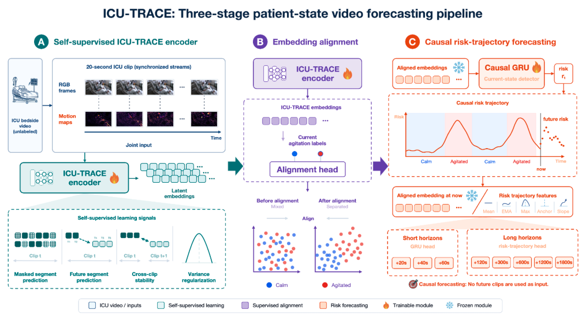
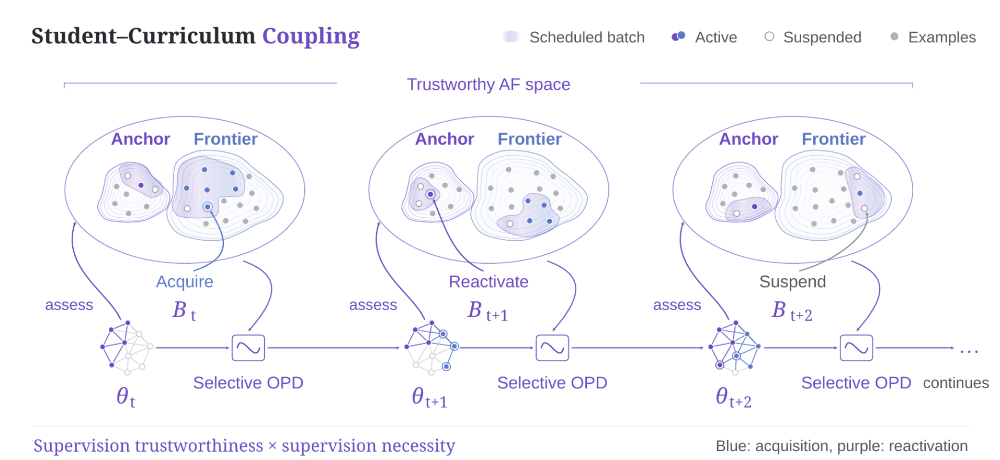
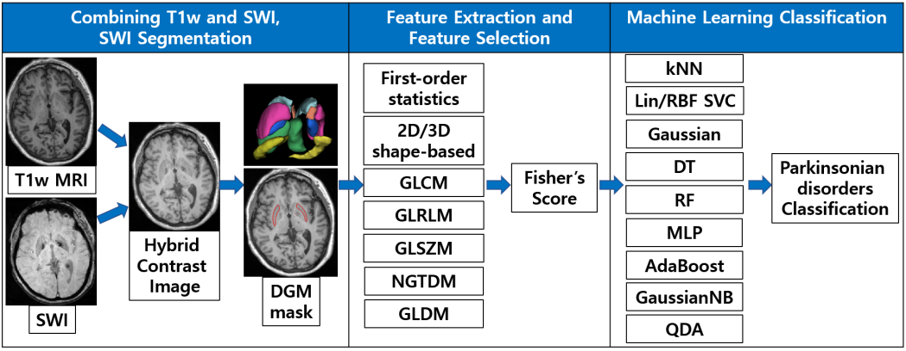

About
I am a Ph.D. student in Electrical and Computer Engineering at Stony Brook University, advised by Sima Mofakham and Petar M. Djurić.
My research is on the reliability of video models under reinforcement learning post-training. I also work on video and multimodal foundation models in clinical settings, including bedside video in the intensive care unit.
Before the Ph.D. I spent three years at Samsung Electronics building foundation models for semiconductor electron microscopy images.
Publications
* denotes equal contribution.
2026

Confidence Inflation from RL Post-Training in Video Language Models
Under review, ICLR 2027

ICU-TRACE: Forecasting of Agitation in the ICU Setting from Bedside Video Using a Temporal Risk-Aware Causal Encoder
bioRxiv preprint

Less Data, Better Timing: Student-Curriculum Coupling for VLM On-Policy Distillation in Temporal Video Grounding
arXiv preprint
SMART-ICU: Monitoring and Predictive Modeling of Behavioral and Physiological Deterioration in the ICU
NIH Brain Behavior Quantification and Synchronization Workshop, abstract
2022

Automated Differentiation of Atypical Parkinsonian Syndromes Using Brain Iron Patterns in Susceptibility Weighted Imaging
Diagnostics

Differentiating Parkinsonian Syndromes Using Distinctive Brain Iron Accumulation Patterns in Susceptibility Weighted Image
IEEE International Conference on Big Data and Smart Computing (BigComp)
2021
Steel Surface Defect Classification using ResNet50
Korea Software Congress (KSC)
Pose Classification and Correction System for At-home Workouts
Journal of the Korea Institute of Information and Communication Engineering
Multiple Sclerosis Lesion Detection using 3D Autoencoder in Brain Magnetic Resonance Images
Journal of Korea Multimedia Society
Surface-based Analysis of Subcortical Structures in SWI for Atypical Parkinsonian Syndromes
Organization for Human Brain Mapping (OHBM), abstract
MRI Image Super Resolution through Filter Learning Based on Surrounding Gradient Information in 3D Space
Journal of Korea Multimedia Society
Experience
Stony Brook University
Jan 2026 - present
Research Assistant, Mofakham-Mikell Lab
Video understanding for ICU patients, multimodal physiological signal analysis.
Samsung Electronics
Aug 2022 - Aug 2026
Research Engineer, Advanced Process Development Team, Semiconductor Research
Foundation models for semiconductor nanostructure electron microscopy images.
University of California, Santa Barbara
Aug 2025 - Dec 2025
Graduate Researcher, Peng Li Lab
Bayesian optimization with LLMs, graph representation learning for circuit generation.
Pusan National University
Mar 2020 - Aug 2022
Research Assistant, Image Computing and Machine Learning Lab
Topographic iron-distribution pattern analysis for atypical Parkinsonian syndrome diagnosis.
Korea Electric Power Research Institute
Sep 2019 - Feb 2020
Research Intern, ICT Solution Lab
Autonomous inspection robot for underground electric power stations.
Education
Stony Brook University
Jan 2026 - present
Ph.D. in Electrical and Computer Engineering
Pusan National University
Sep 2020 - Aug 2022
M.S. in Information Convergence Engineering
Thesis: Machine learning for diagnosis of atypical Parkinsonian syndromes via texture analysis of 3D brain MRI.
Pusan National University
Mar 2014 - Aug 2020
B.S. in Computer Science and Engineering
Patents
Method for Matching Semiconductor Sample Frontside and Backside Pair Images of Scanning Electron Microscopy for Automated Sample Preparation and Inspection
KR 10-2025-0130253, pending, 2025
Method for Automatically Measuring Semiconductor Structure Based on Learning of Semiconductor Image Segmentation Foundation Model
KR 10-2024-0109944 and US application, pending, 2024
Electronic Device and Operation Method Thereof
KR 10-2024-0001688, pending, 2023
Method and Apparatus for Generating Basal Ganglia Mask Emphasizing Fe Component in Brain using T1 MRI and SWI, and Classification System of Atypical Parkinsonian Syndromes using the Same
KR 10-2662563, registered, 2024
System and Method for Classification of Steel Surface Defects Using Deep Learning Model
KR 10-2762749, registered, 2025
Awards
Samsung Best Paper Award, Grand Prize
2024
TEM image segmentation modeling for automatic measurement of semiconductor device core structure. Awarded by the CEO of Samsung Electronics.
Samsung Data Science Festival, 1st Prize, AI Track
2023
Awarded by the CEO of Samsung Electronics.
Chatbot Contest with Microsoft, Encouragement Prize
2020
Best Intern Award, 2nd Prize
2020
Korea Electric Power Research Institute.